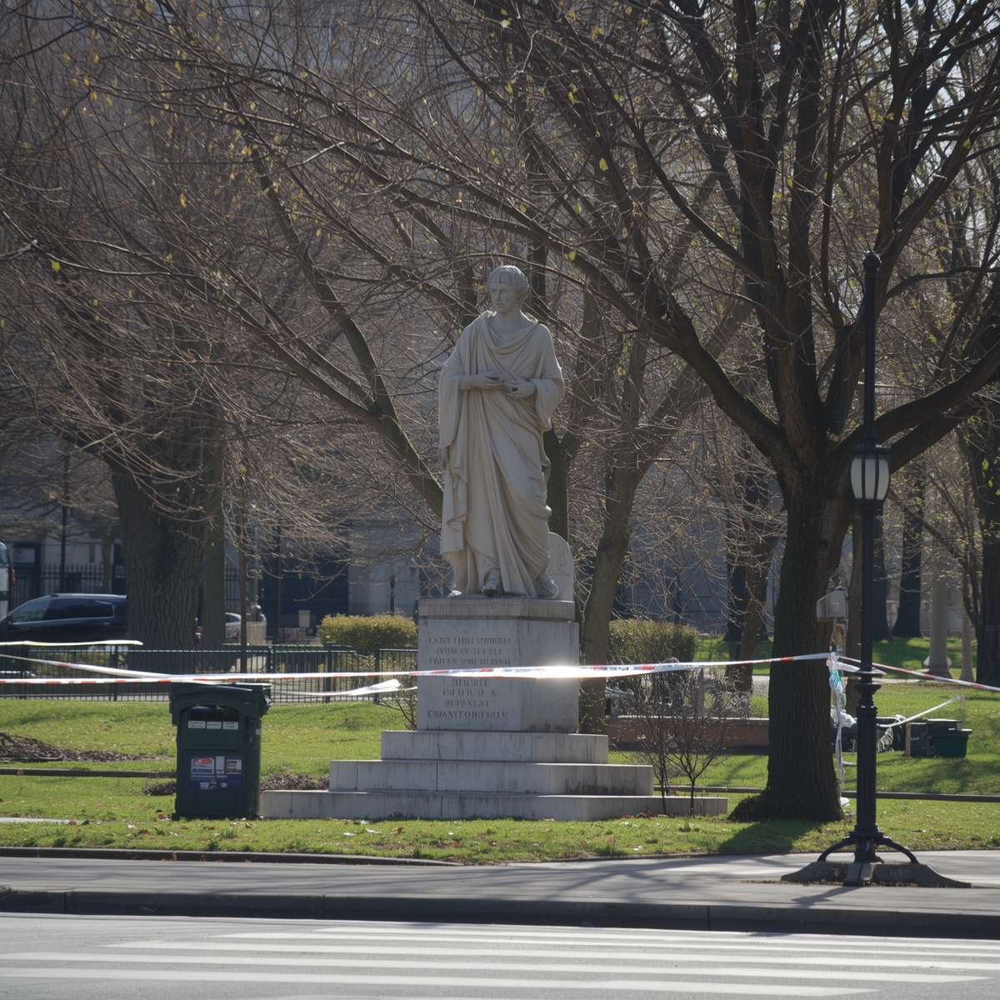
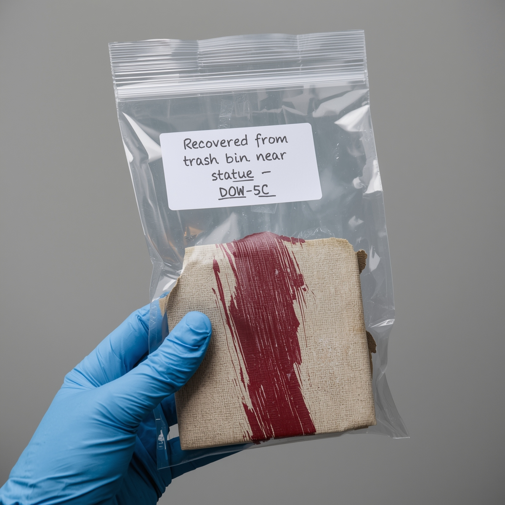

Dane punktu
Lokalizacja: park przy ul. Krasińskiego
Czas oględzin: 16.05.2025, godz. 09:00
Funkcjonariusz prowadzący: podinsp. K. Boruta
Osoba przesłuchana
Helena Wrona – kolekcjonerka sztuki.
Zeznaje, że widziała Annę Borkowską dzień przed zaginięciem Leona.
Kobieta miała torbę z farbami i zawiniętym płótnem.
Zatrzymała się przy pomniku, coś wyrzuciła do kosza.
Twierdzi, że Leon odmawiał sprzedaży obrazu „Cisza po burzy”, mówiąc:
Nie można sprzedać czegoś, czego już nie ma.
Materiały / dowody zabezpieczone
• Ścinek płótna z kosza – zgodny z materiałem używanym przez Borkowskiego.
• Pusta tubka farby olejnej (kolor: karminowy).
• Zdjęcie z telefonu Heleny – przypadkowo uchwyciła Annę w parku.
Załączniki
Fotografia parku i pomnika:

Zdjęcie z telefonu (Anna w niebieskim płaszczu):
Koperta z fragmentem płótna (oznaczenie: DOW-5C):
